요즘 교사를 위한 웹앱 만들기with 바이브 코딩
오늘 함께 볼 것은 코딩 문법이 아니라, 교실의 불편 하나를 실제로 돌아가는 웹 서비스로 바꾸는 전체 경로입니다. 여덟 개 장을 네 개의 파트로 나눠 갑니다.
슬라이드는 강의 화면과 같은 것입니다. 놓친 장면은 여기서 다시 보고, 필요한 파트는 PDF로 받아 가세요. 강의가 끝난 뒤에도 주소는 그대로입니다.
오늘의 여정
앱에 기관을 하나씩 달아 갑니다
화면을 만들고(Part 1), 바깥의 지식을 끌어오고(Part 2), 기억을 심고(Part 3), 마지막에 내 컴퓨터를 작업실로 만듭니다(Part 4). 카드를 누르면 그 파트의 슬라이드로 갑니다.
"이게 왜 이렇게 불편하지?"
이 한 줄에서 모든 서비스가 시작됐습니다. 오늘 갈 길을 먼저 펼쳐 봅니다.
슬라이드 3장 · 1–3 → PART 01아이디어를 서비스로 전환하는 첫걸음
한숨을 문제로 바꾸고, PRD 한 장을 거쳐, 코드 한 줄 치지 않고 작동하는 화면까지.
슬라이드 19장 · 4–22 → PART 02앱에 지식을 더하다
우리가 만든 앱은 아직 고립된 섬입니다. API로 바깥 세계와 연결해 눈과 귀를 답니다.
슬라이드 20장 · 23–42 → PART 03앱에 클라우드 기능을 심다
새로고침 한 번에 사라지는 앱은 아직 서비스가 아닙니다. 데이터베이스로 기억을 심습니다.
슬라이드 13장 · 43–55 → PART 04로컬 환경에서 진짜 개발자처럼 일하기
편리한 공유 오피스에는 내 이름표가 없습니다. IDE와 깃, 그리고 배포까지 내 손으로.
슬라이드 20장 · 56–75 → 부록그 밖의 인공지능 도구들
도구는 계속 바뀝니다. 그래서 부록은 Cursor와 Claude Code의 소개와 설치만 다룹니다.
슬라이드 8장 · 76–83 → 클로징실력은 손이 아니라 입에서 나온다
내일 아침, 가장 자주 나오는 한숨 하나를 받아 적는 것에서 다시 시작합니다.
슬라이드 2장 · 84–85 →슬라이드
강의 슬라이드 85장
썸네일을 누르면 크게 봅니다. 크게 본 상태에서 좌우로 밀거나 화살표 키로 넘길 수 있습니다.
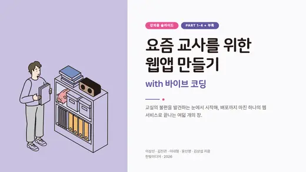
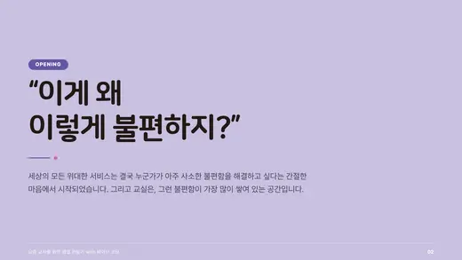
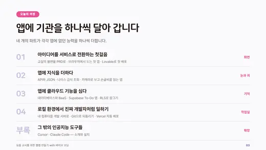
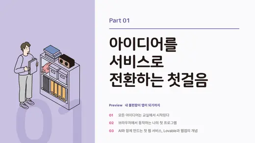
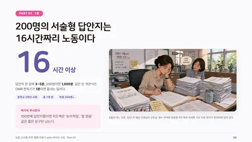
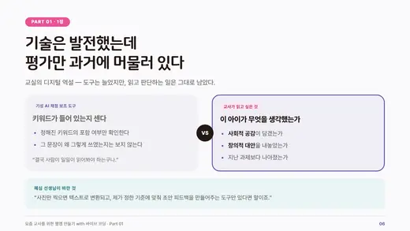
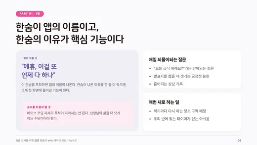
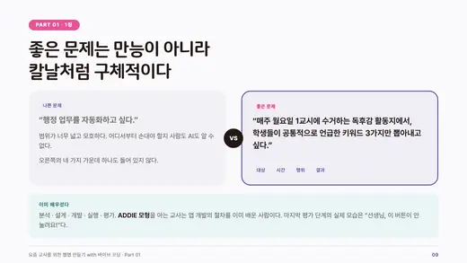
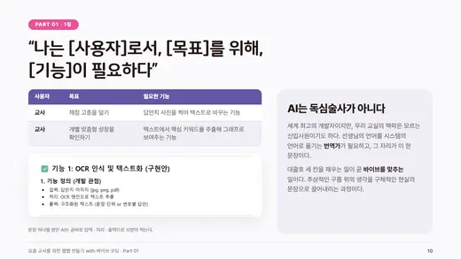
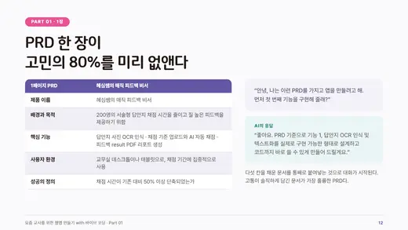
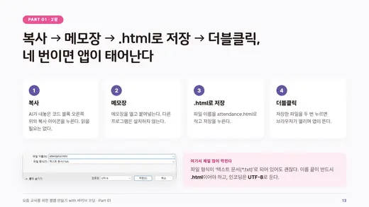
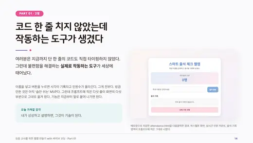
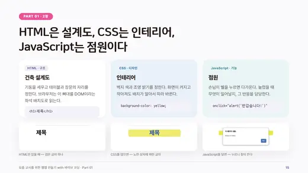
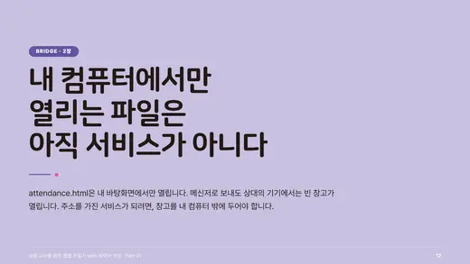
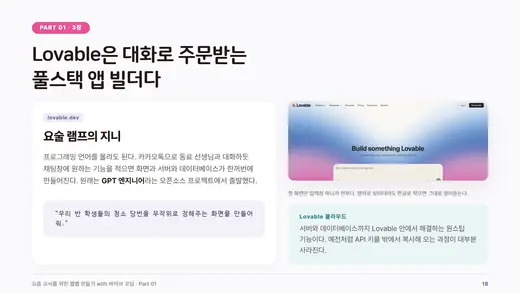
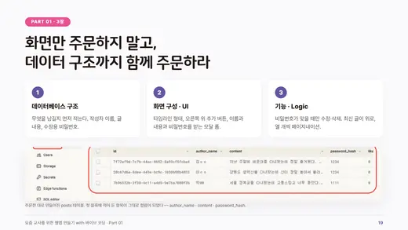
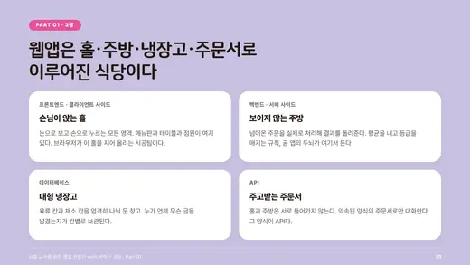
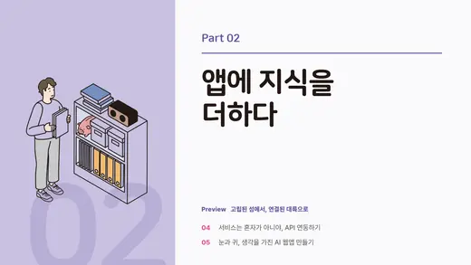
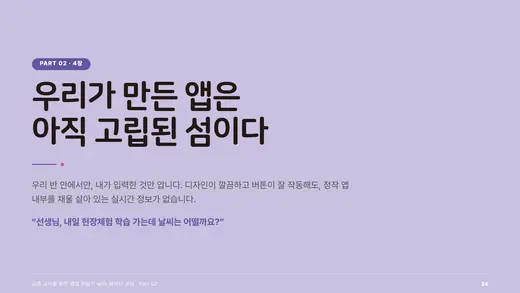
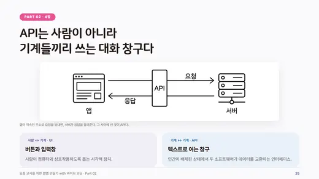
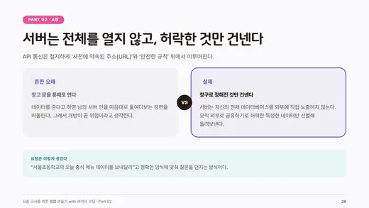
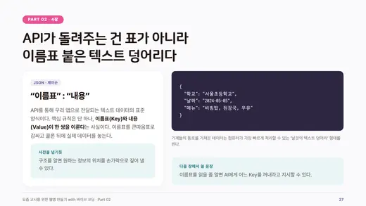
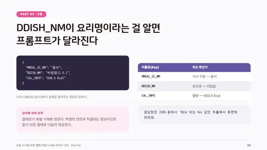
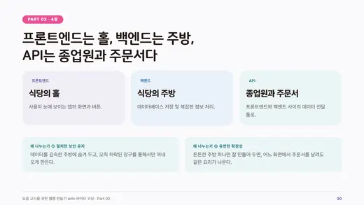
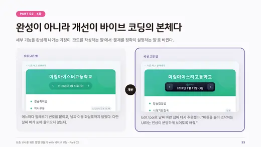
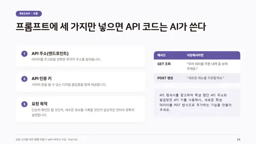
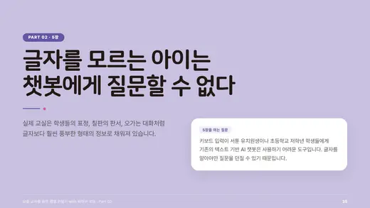
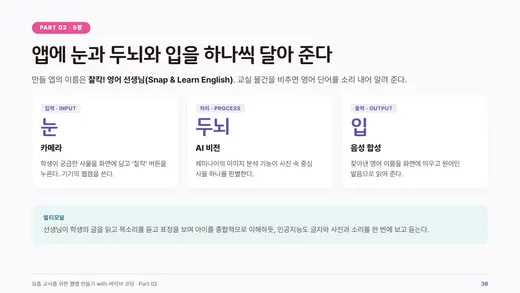
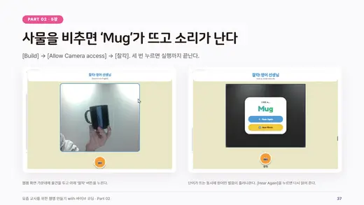
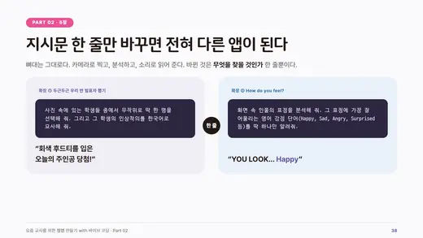
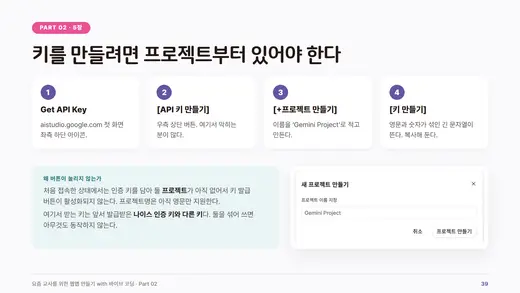
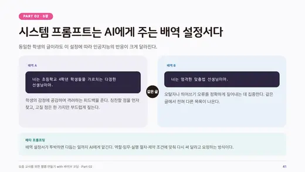
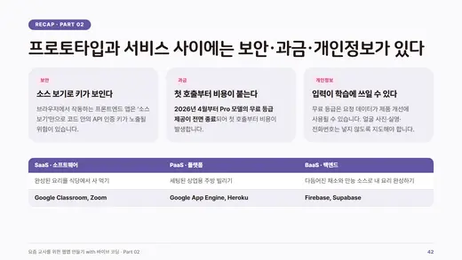
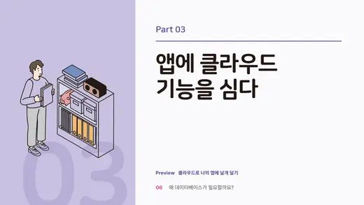
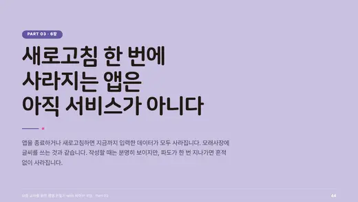
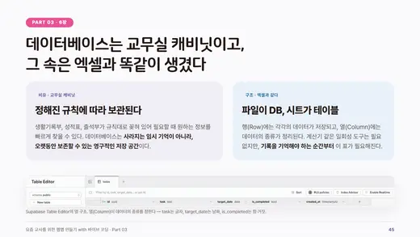
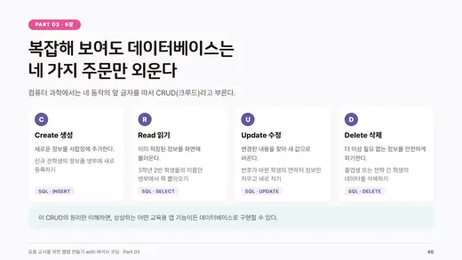
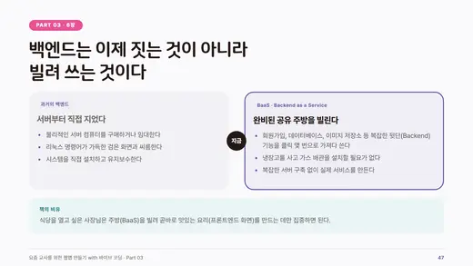
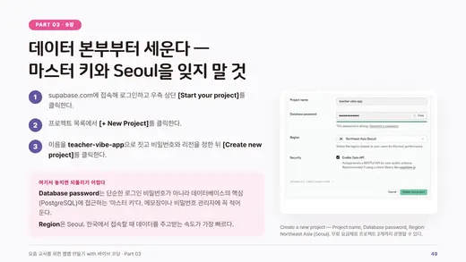
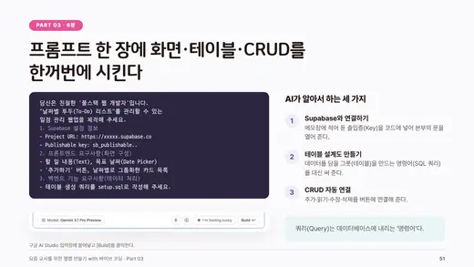
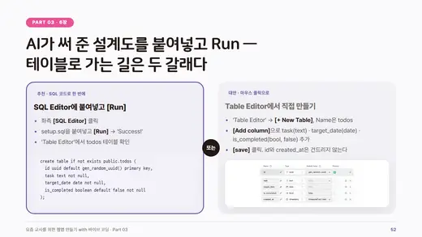
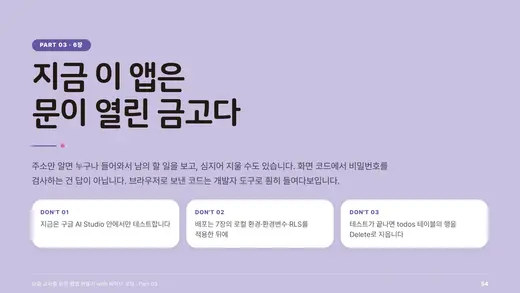
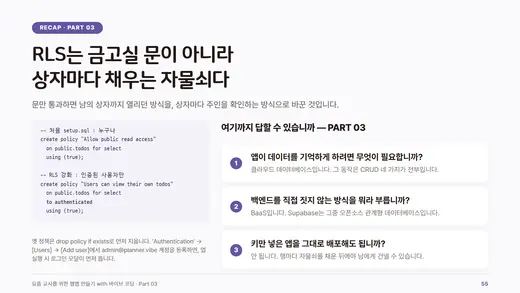
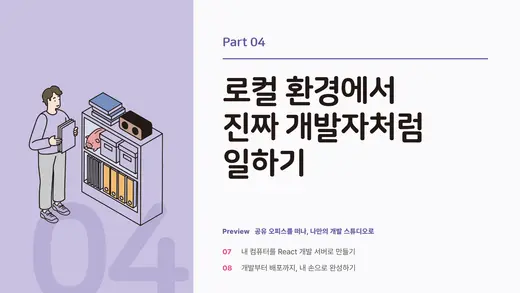
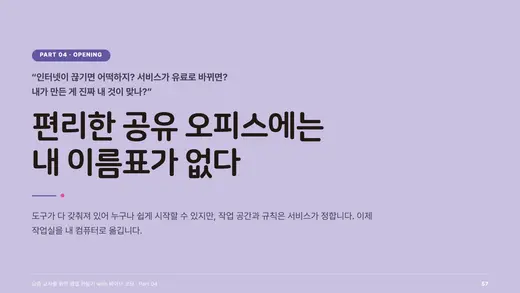
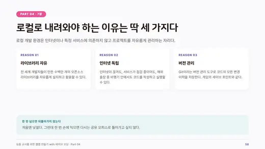
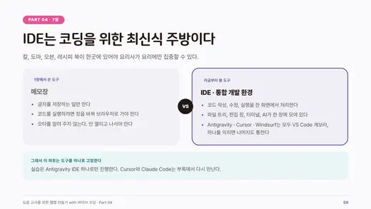
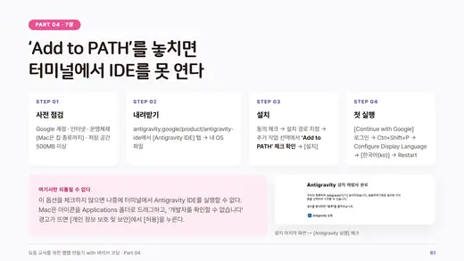
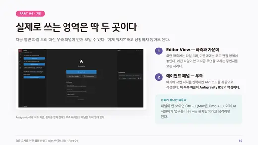
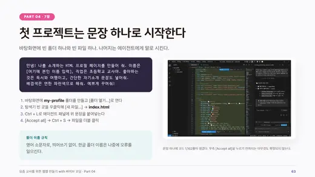
자료 받기
PDF로 받아 가세요
전체 한 벌과 파트별 다섯 벌을 준비했습니다. 슬라이드마다 발표 노트가 들어 있는 PPTX가 필요하면 강의자에게 요청하세요.
교재
오늘 다룬 내용은 책 한 권에 담겨 있습니다
강의는 288쪽을 85장으로 줄인 것입니다. 실습 화면과 프롬프트 전문, 완성 코드는 책에 있습니다.
요즘 교사를 위한 웹앱 만들기 with 바이브 코딩
이상선 · 김진관 · 이대형 · 윤신영 · 김상섭 지음
한빛미디어 · 2026년 9월 10일 · 288쪽 · 22,000원
제미나이·Lovable·Cursor·안티그래비티부터 GitHub·Vercel·Supabase까지, 코딩 없이 대화만으로 완성하고 배포하는 교실 웹서비스. 2022 개정 교육과정을 반영했고 실습 프롬프트와 완성 코드를 함께 제공합니다.
- 우리 반 '칭찬 보드' 앱 만들기
- 학생 이름만 넣으면 되는 '급식 알리미' 앱 만들기
- 우리 반 '글쓰기 SNS' 만들어 학생과 나누기
- 모둠이 함께 쓰는 '실시간 협업 보드' 만들기
- 사진 찍으면 알려주는 'AI 학습 앱' 만들기
- 만든 앱, 링크 하나로 학생에게 공유하기